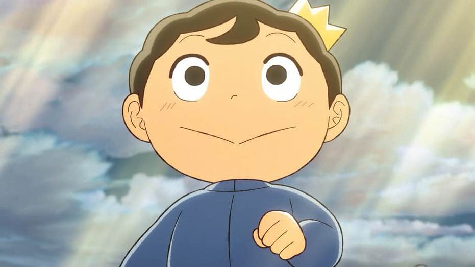

The story is about a little prince named Bojji who is deaf but above all naive, because despite many criticisms from his people about his accession to the throne, he does his best and dreams of becoming the greatest of kings. One day, he meets Kage (Shadow), a survivor of a wiped out assassin clan, who understands his words despite Bojji being silent and prone to making noises.
